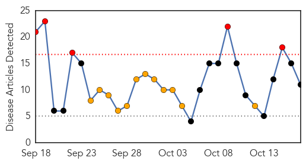
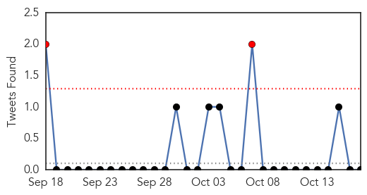
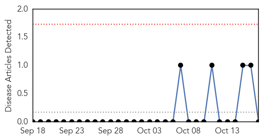
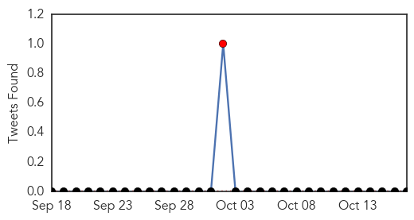

Influenza
30-Day Web Trend
5 alerts, 12 warnings

30-Day Twitter Trend
2 alerts, 0 warnings

Article Locations

Article Confidences

Top Articles:
- 0.998
- The Argonaut – Fending off the flu
- 0.993
- Cough, cough ... it's the time of year to get your flu shot
- 0.988
- Nasal spray flu vaccine for kids is hard to find, but get shots anyway, experts say
- 0.979
- Seasonal flu shot clinics open across Alberta
- 0.967
- How an Obama Administration Policy is Destroying Lives
- 0.961
- Maine Confirms First Case of Seasonal Flu
- 0.915
- First cases of influenza reported in Michigan for this season
- 0.758
- Delay of flu shots in Mid-Missouri
- 0.658
- Saskatoon Health Region dealing with greater demand for flu-shots
- 0.617
- Pharmacists encourage flu vaccinations
- 0.617
- U.S. temporarily halts funding for controversial virus research
Top Tweets:
-
No tweets found for Oct 17, 2014
Yellow Fever
30-Day Web Trend
0 alerts, 0 warnings

30-Day Twitter Trend
1 alerts, 0 warnings

Article Locations

Article Confidences

Top Articles:
-
No articles found for Oct 17, 2014
Top Tweets:
-
No tweets found for Oct 17, 2014